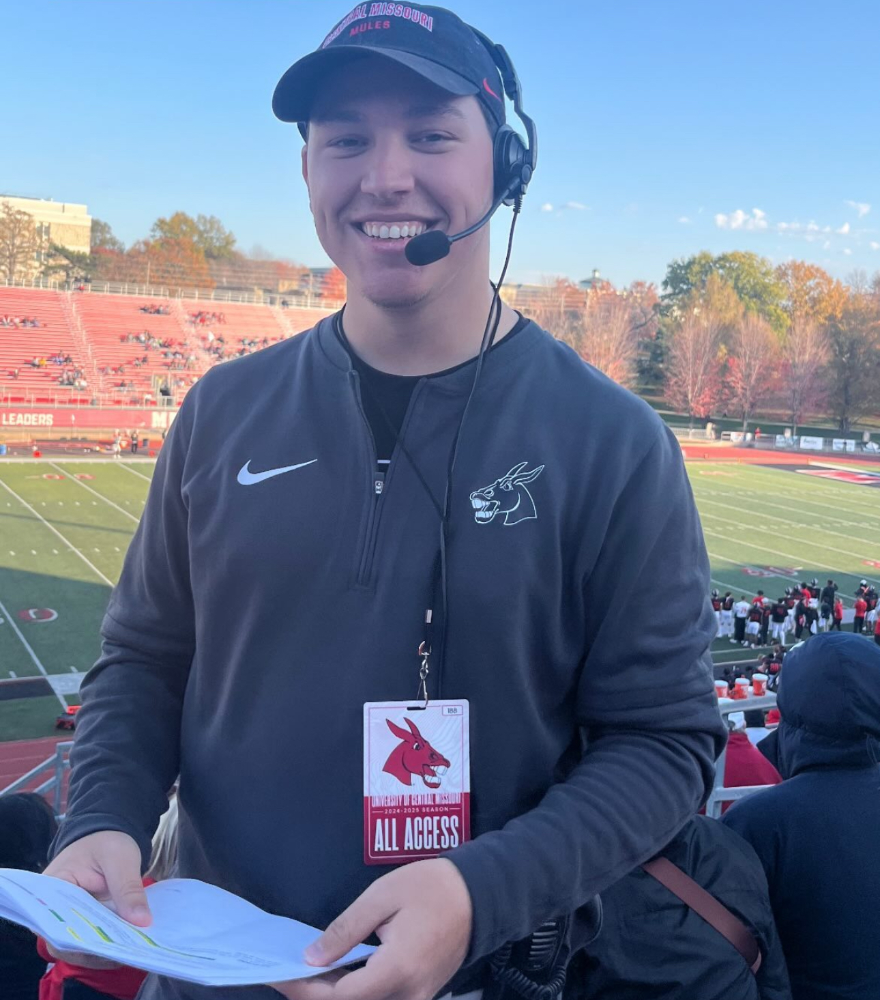

Welcome! Thanks for visiting my professional portfolio site.
This website is a curated space to showcase my work in sports marketing, brand storytelling, and live event production. The goal is to present a comprehensive view of my career in athletics. From strategic planning and social media campaigns to ticketing growth and team leadership. Through projects, reflections, and personal insights, I aim to highlight the creativity and data literacy I bring to every initiative. I want this site to not only be a snapshot of what I’ve done, but a glimpse into how I think. I hope it inspires future collaborations or career opportunities with others who share a passion for impactful sports experiences.
